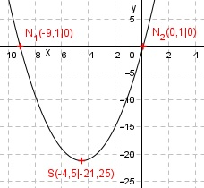

Aufgabe 42 Welche Koordinaten haben der Scheitelpunkt S und die Nullstellen N der folgenden Funktion? y = x2 + 9x - 1 Ermitteln der Scheitelpunktform: Quadratische Ergänzung: y = x2 + 9x + 20,25 – 20,25 - 1 mit x2 + 9x + 20,25 = (x + 4,5)2 y = (x + 4,5)2 - 21,15 S abgelesen: S(-4,5|-21,25) Nullstellen: y = 0 0 = x² + 9x - 1 p, q – Formel : p = 9 ; q = 1 x1,2 = x1,2 = -4,5 ± x1,2 = -4,5 ± x1,2 = -4,5 ± 4,6 x1 = -4,5 – 4,6 = -9,1 x2 = -4,5 + 4,6 = 0,1 N1(-9,1|0) ; N2(0,1|0)
